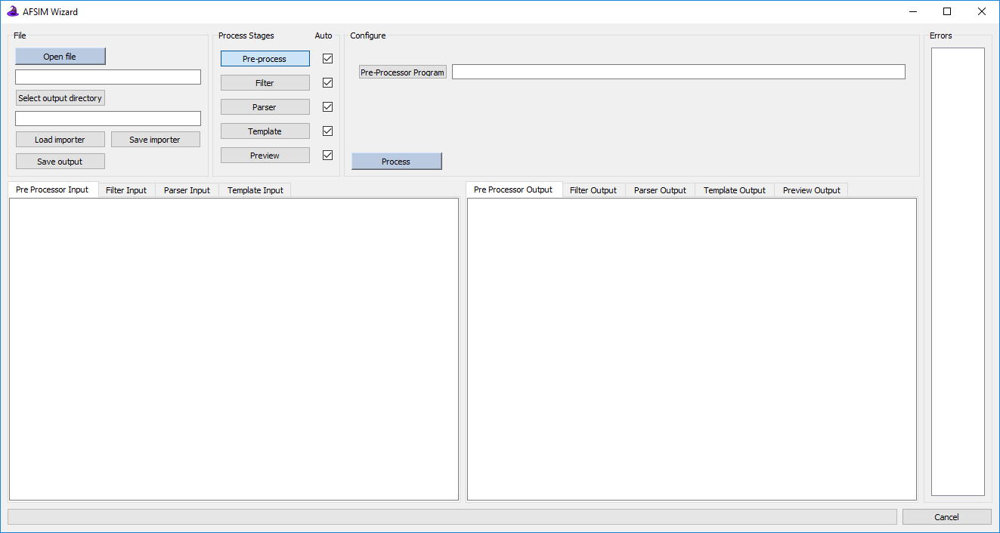
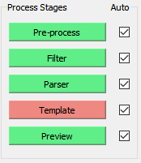

Scenario Importer Overview¶
Overview¶
The Scenario Importer is a plugin for Wizard, the AFSIM IDE. The plugin can be used to take existing scenarios in unrecognized or outdated formats and reformat them to contain proper AFSIM syntax, so that they can be ran as AFSIM scenarios. The plugin can also be used to apply changes to desired platform parameters, or simply to make quick programmatic edits to an entire simulation. From a work-flow perspective, the Scenario Importer works through 5 stages, some of which are optional, as follows:
The Pre-Processing stage allows users to load an existing pre-processing program which they may require to get their scenario in a desired format, typically CSV or some other logically delimited representation of the scenario. Pre-Processing is optional and may be unnecessary.
Filters can be applied optionally in the next stage to remove unwanted entries before moving on to formatting.
The Parsing stage allows analysts to divide and tag their input data with keys. This step allows for checks to be made on data types; for example if a user tags a column of their input at a latitude value, it will be validated to be within the legal range, as well as for simple formatting errors and typos.
A Template is created in the next stage in which the user can generate properly formatted AFSIM platforms. A variety of conditionals and functions allow for the user to build up files with platforms of varying types and parts, and to apply edits to command chains, any numeric values, etc.
Finally the Preview stage, which doesn’t do much work, allows for analysts to see the output of the Importer they have created before moving on. If desired, this stage allows users to save output to files specified by platform type, or any other parameter.
All of these stages are described in more detail on the stage descriptions page and a demonstration with all of their features can be found on the demo page.
File Handling¶

Open file will open a file browser and ask for the base input file containing unformatted. This should be the file before any desired pre-processing has been applied.
Select output directory will open another file browser and allow the user to select a directory for finished and formatted files to be saved to. This directory will need to be specified before any output can be saved.
Analysts can use Load importer and Save importer to speed up their work-flow; once the importer stages are configured for a particular kind of input they can be saved and re-used at a later time. The saved configurations are just text files and can be placed anywhere which is convenient.
Finally Save output, when the correct output is visible in the preview stage and the output directory is valid, any specified output files from the preview stage will be saved.
Stage Control¶
Stages in which the Importer processing input data can be accessed here. Each stage processes any changes automatically if it’s respective check-box is set, and processing occurs from the top down. Any errors which occur in a stage will cause its navigation button to turn red, in which case any work done by future stages should be considered null. Any time a stage considers itself complete, having processed data without errors, it will turn green; though this does not necessarily mean a user has done everything necessary for the stage to work as desired.
Much more detail on the stage configurations and outputs is described here and there is a also a demonstration which steps through using each stage to format a scenario.